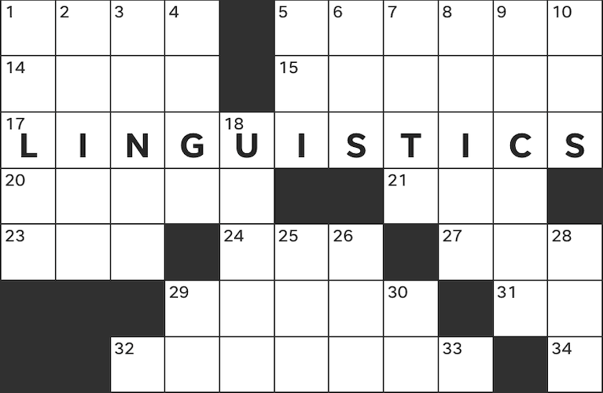
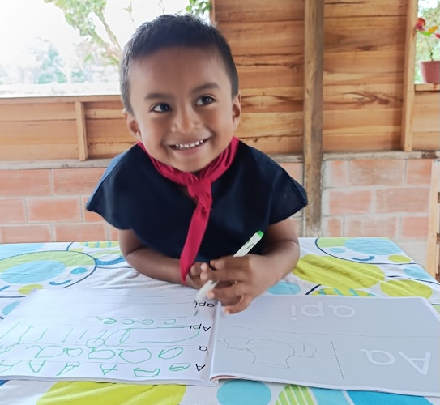
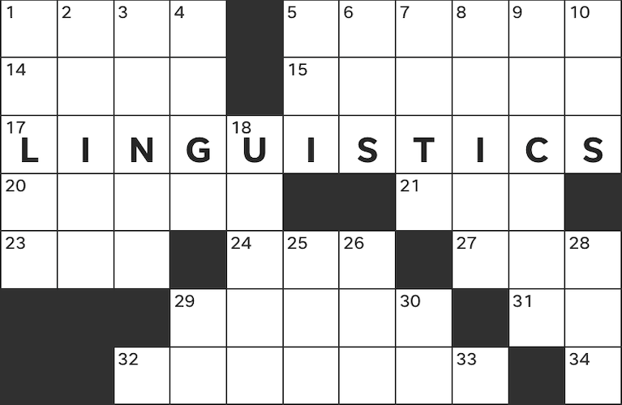
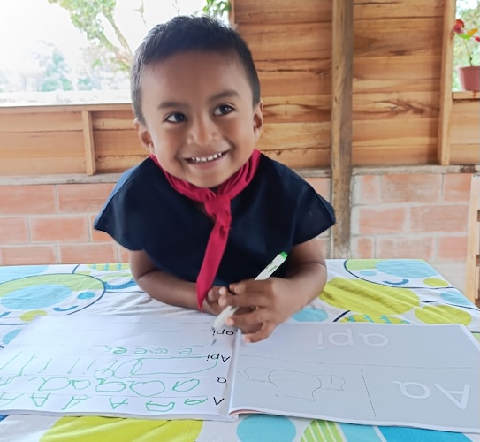

I am an Associate Professor in the Program in Linguistics at Brown University and currently serve as the program's director. My research is focused on community-engaged language documentation, working in collaboration with speakers of A'ingae (an indigenous language isolate of Amazonian Ecuador) and colleagues to create a diverse multimedia, multi-purpose collection of texts and other language materials (check out our digital corpus here). Together, we use these materials to further community language goals and to answer scientific questions about the language's grammar and use. This work is focused especially on issues in semantics/pragmatics, exploring ways in which principles governing linguistic meaning vary or are constant across languages.
  
 
I also explore these sorts of semantic and pragmatic questions through work on other languages, especially including Yucatec Maya (a Mayan language of southern Mexico, see U koorpusil maaya t'aan, a digital corpus I co-created with Miguel Oscar Chan Dzul). I have also worked a bit on semantic/pragmatic issues in Tagalog and American English
I also have an ongoing project in collaboration with Kyle Mahowald and Nicholas Tomlin examining the hidden grammar of crossword puzzles and the various ways that they reflect implicit linguistic knowledge. See our article in The Atlantic on the linguistic underpinnings of the so-called "green paint principle"!
My teaching is primarily in the areas of Semantics, Pragmatics, Typology, Indigenous Languages of the Americas, Wordplay, and Linguistic Field Methods among other topics. I can best be reached by email: first_lastname@Brown.edu